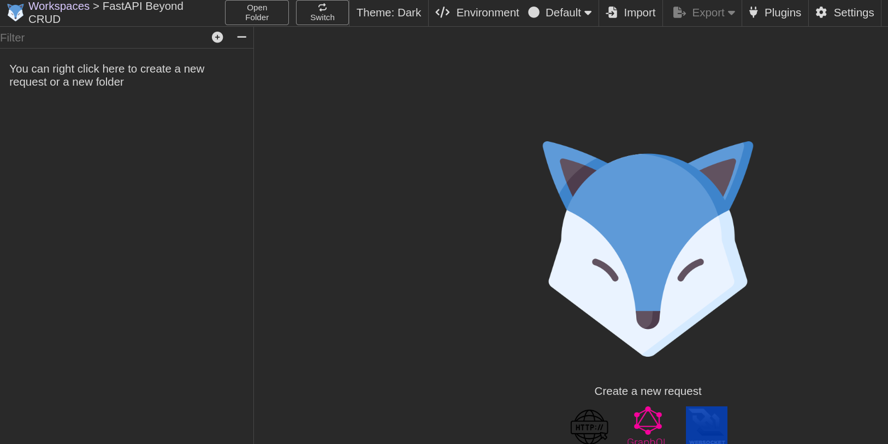
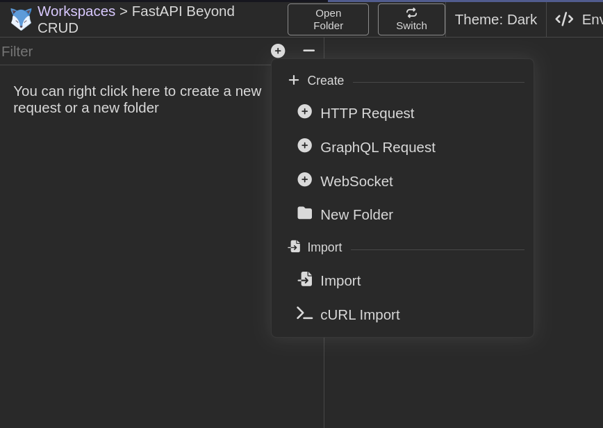
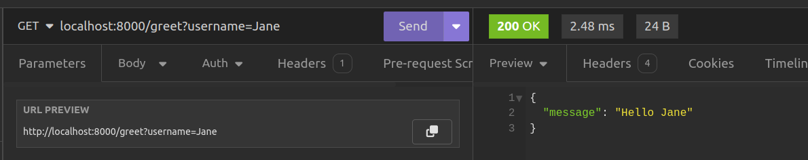
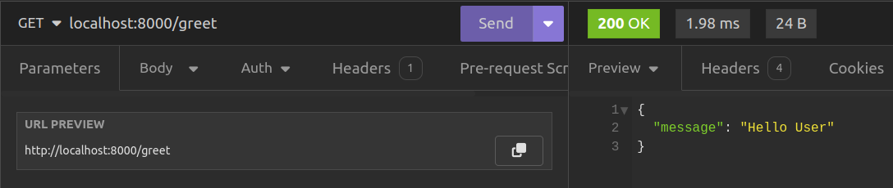

Chapter 2: Building Your First Web Server
Introduction
With our environment prepared and FastAPI installed, it is time to breathe life into our project. In this chapter, we will transition from a static installation to a functional web service, exploring the core building blocks that make FastAPI so powerful and intuitive.
At this stage, your project directory should look familiar. It contains the virtual environment we established and the foundational files created in the previous chapter:
.
├── .gitignore
├── main.py
├── pyproject.toml
├── .python-version
├── README.md
└── uv.lock
The heart of our application currently resides in main.py. Let's take a closer look at the code we’ve written so far:
from fastapi import FastAPI
app = FastAPI()
@app.get("/")
def index() -> dict:
return {"Hello": "World"}
Even in these few lines, several important things are happening. First, we import the FastAPI class, which serves as the main entry point to the framework. Think of this class as the orchestrator of your application—through it, you'll define routes, register middleware, and manage how your server handles everything from basic requests to complex exceptions.
Next, we create an instance of this class and name it app. While you can technically name it anything, app is the industry standard and makes your code immediately recognizable to other developers.
Finally, we define our first API route by creating a Python function, index, and decorating it with @app.get("/"). This decorator tells FastAPI to execute the index function whenever someone visits the root URL with an HTTP GET request and return its result—in this case, a simple JSON message.
FastAPI makes handling different types of interactions seamless. While we're using get here to retrieve data, the @app decorator supports all standard HTTP methods—post, put, delete, patch, and more—allowing you to build comprehensive, RESTful APIs with ease.
Running the Application
To see our code in action, we return to the terminal. As we saw in the previous chapter, we can launch our server using the uv tool and the FastAPI CLI:
The fastapi dev command is specifically designed for local development. It starts the server in a "hot-reload" mode, meaning it watches your files for changes. The moment you hit save on a file, the server automatically restarts to apply your updates, providing a smooth and efficient feedback loop. By default, it looks for common filenames like main.py or app.py to find your application instance.
Once the server is running, your application is live and waiting for requests at http://localhost:8000.
Choosing an API Client
While you can visit your API in a web browser, a browser is limited in the types of requests it can make. To truly interact with and test your application, you will want a dedicated API client.
While tools like Postman and Insomnia are widely used, RestFox stands out as an excellent open-source alternative. It operates entirely locally, ensuring your data stays on your machine without requiring a cloud account. Throughout this book, we will use RestFox to demonstrate how to test our endpoints.
Setting up your first request in RestFox is a straightforward process:
-
Create a Request Collection: This helps you organize your API calls into logical groups.

-
Name Your Collection: Give your project a clear, descriptive name.

-
Create an HTTP Request: Add a new request to your collection.

-
Execute the Request: Enter the URL and hit "Send" to see your "Hello World" response.

With these simple steps, you have successfully verified that your server is running and responding as expected.
Managing Requests and Responses
In a real-world application, a web server rarely just sends back static messages. It needs to receive data from users, process it, and respond accordingly. In FastAPI, there are several standard ways for a client to pass information to your API:
- Path Parameters: Data embedded directly in the URL structure.
- Query Parameters: Key-value pairs appended to the end of a URL.
- Request Headers: Metadata about the request, such as authentication tokens or content types.
- Request Body: Data sent as the payload of the request.
The Importance of Type Declarations
One of FastAPI's most significant advantages is its deep integration with Python type hints. By declaring the types of your parameters, you allow FastAPI to handle data validation and documentation automatically. If you're unfamiliar with this modern Python feature, I recommend reviewing the Python Type Hints section carefully.
Path Parameters
Path parameters allow you to make your URLs dynamic. For instance, instead of creating a separate route for every user, you can create a single route that accepts a "username" as part of the URL. In FastAPI, we denote these parameters using curly braces ({}).
#inside main.py
@app.get('/greet/{username}')
async def greet(username: str) -> dict:
return {"message":f"Hello {username}"}
In this example, the username captured from the URL is passed directly into our greet function. Because we've annotated it as a str, FastAPI ensures that it is treated as a string throughout the function's execution.

FastAPI is also smart enough to handle basic data conversion; any value provided in that segment of the URL will be automatically parsed according to your type definition.

Validating Path params
We can declare and validate path parameters in FastAPI using the Path function in FastAPI.
from fastapi import Path
@app.get('/greet/{username}')
async def greet(username: str=Path(... ,max_length=100, min_length=2)) -> dict:
return {"message":f"Hello {username}"}
The use of ... specifies that the path parameter is always required. Unlike query parameters, path parameters cannot have default values.
The Path function accepts the following arguments:
gt, ge, lt, le: numeric validations for numeric parametersmin_length / max_length: string validations for string path parameterstitle/description: Used in OpenAPI documentation (we'll cover this later)pattern: The regex pattern to match against the path parameter
Query Parameters
Query parameters are the key-value pairs you often see at the end of a URL, following a question mark (?). They are ideal for optional data, such as search filters or pagination settings.
# inside main.py
"Jerry",
"Joey",
user_list = [
"Phil"
]
@app.get('/search')
async def search_for_user(username: Optional[str] =None) -> dict:
for user in user_list:
if username in user_list :
return {"message":f"details for user {username}"}
else:
return {"message":"User Not Found"}
Notice that we didn't include {username} in the route path this time. In FastAPI, any function parameter that isn't part of the path is automatically treated as a query parameter. To use this endpoint, you would navigate to /search?username=Jerry.

If the user isn't found, our logic handles it gracefully:

However, if you try to call this endpoint without providing a username, FastAPI returns a validation error because we haven't provided a default value, making the parameter required by default.

To make a parameter truly optional, provide a default value. By using Python's Optional type and assigning a fallback, you ensure your API remains robust even when certain data is missing.
from typing import Optional
@app.get('/search')
async def search_for_user(username: Optional[str] = "Jerry") -> dict:
for user in user_list:
if username in user_list :
return {"message":f"details for user {username}"}
else:
return {"message":"User Not Found"}
Now, if a request arrives without a query string, the API will simply default to searching for "Jerry."

Refining Optional Parameters
The flexibility of FastAPI allows you to mix and match these approaches. You can even design routes that can handle a parameter as either a path element or a query string, depending on your architectural needs. Consider this alternate version of our greeting:
from typing import Optional
@app.get('/greet/')
async def greet(username:Optional[str]="User") -> dict:
return {"message":f"Hello {username}"}
By removing {username} from the route string and providing a default value in the function signature, we've transformed it. Now, username becomes an optional query parameter that defaults to "User" if not provided.


Validating Query Parameters
We can also validate query parameters FastAPI route handlers using FastAPI's Query function.
from fastapi import Query
@app.get('/greet/')
async def greet(username: str = Query(default="User", min_length=2, max_length=100)) -> dict:
return {"message":f"Hello {username}"}
The Query function lets you add important validations to query parameters. Here are its main arguments:
default: The default value if the query parameter isn't providedmin_length/max_length: String length validationsle,lt,ge,gt: Integer value validationspattern: A regex pattern to match against the query parameteralias: An alternative parameter name that can be used instead
The Request Body and Pydantic
As your application grows, you'll often need to send complex data structures to the server—for example, when creating a new product or updating a user profile. While you could pass this data through query parameters, it quickly becomes unwieldy.
Instead, use a Request Body. FastAPI harnesses Pydantic to let you define exactly what your data should look like using simple Python classes.
# inside main.py
from pydantic import BaseModel
# the User model
class ProductSchema(BaseModel):
name:str
price:float
description:str
@app.post("/create_product")
async def create_product(product_data:ProductSchema):
new_product = {
"name" : product_data.name,
"price": product_data.price,
"description" : product_data.description
}
In this example, we define a ProductSchema that inherits from Pydantic's BaseModel. This serves as a blueprint: any data sent to the /create_product endpoint must match this structure.
from pydantic import BaseModel
class ProductSchema(BaseModel):
name: str
price: float
description: str
FastAPI handles the heavy lifting for you. It automatically parses the incoming JSON, validates the data types, and provides you with a clean Python object (product_data) to work with inside your function.
If a client sends an invalid request—for example, by omitting the request body—FastAPI automatically catches it.

You’ll notice the server returns a 422 Unprocessable Entity status. This isn't just a generic error; it’s a helpful signal that the data provided (or lack thereof) didn't meet the requirements of your schema. Similarly, if required fields are missing, FastAPI will pinpoint exactly what is wrong:

When the client provides valid data that matches our schema, everything works perfectly:

Adding Values to Request Body Without Pydantic Models
By now, you understand that any parameter not defined in your path parameters is treated as a query parameter. Here's a simple example:
class ProductSchema(BaseModel):
name: str
price: float
description: str
@app.post("/create_product")
async def create_product(product_data:ProductSchema, sku: str):
new_product = {
"name" : product_data.name,
"price": product_data.price,
"description" : product_data.description
}
This treats the new parameter as a query parameter. But what if you want it to be part of the request body without adding it to the Pydantic model? That's where the Body function comes in. It lets you include the sku field in the request body even if it's not part of your model.
from fastapi import Body
class ProductSchema(BaseModel):
name: str
price: float
description: str
@app.post("/create_product")
async def create_product(product_data:ProductSchema, sku: str= Body(...)):
new_product = {
"name" : product_data.name,
"price": product_data.price,
"description" : product_data.description
}
return {"product": product, "sku": sku}
Understanding Request Headers
Beyond the explicit data we send in the URL or the body, every HTTP request carries Headers. These provide essential context about the request's origin and preferences, such as:
- User-Agent: Identifies the client software making the request.
- Host: The domain name the client is reaching out to.
- Accept-Language: The user's preferred language for the response.
- Authorization: (Often used for security tokens, which we will cover later).
FastAPI makes accessing headers just as easy as any other parameter. Use the Header function to retrieve specific values—FastAPI automatically maps from HTTP kebab-case (like User-Agent) to Python snake_case (user_agent).
# inside main.py
@app.get("/get_headers")
async def get_all_request_headers(
user_agent: Optional[str] = Header(None),
accept_encoding: Optional[str] = Header(None),
referer: Optional[str] = Header(None),
connection: Optional[str] = Header(None),
accept_language: Optional[str] = Header(None),
host: Optional[str] = Header(None),
) -> dict:
request_headers = {}
request_headers["User-Agent"] = user_agent
request_headers["Accept-Encoding"] = accept_encoding
request_headers["Referer"] = referer
request_headers["Accept-Language"] = accept_language
request_headers["Connection"] = connection
request_headers["Host"] = host
return request_headers
Making a request to this route reveals the fascinating layer of metadata that travels with every click and API call.

Conclusion
In this chapter, we've moved beyond installation and built a functioning web server. We've explored the various ways clients can communicate with our API through path parameters, query strings, request bodies, and headers—and seen how FastAPI uses Python type hints to make this communication safe and reliable.
In the next chapter, we'll take these concepts further and build a real-world application: a CRUD (Create, Read, Update, Delete) API for managing a bookstore, using an in-memory database to keep our focus on core web development logic.